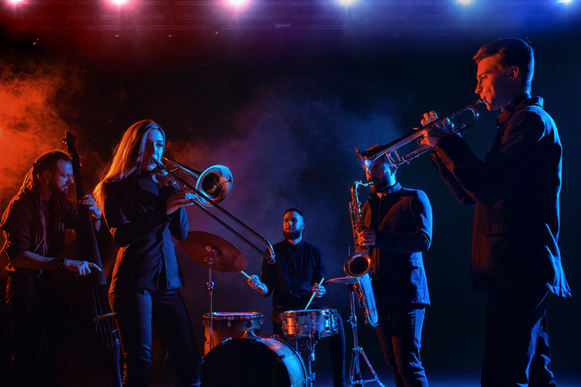

Styles
Early Jazz
Early Jazz, also known as “Hot Jazz” or “Dixieland Music”, was typically played by small groups of musicians in intimate settings. This style of Jazz is often characterized by its relaxed and spontaneous feel, as well as its inventive solos and improvisations based on melodies.
Big Band and Swing Music
The 1940s brought about the big band and swing music era in Jazz. This type of Jazz is characterized by its up-tempo tempos, lush orchestration, and improvisational solos. Some of the biggest names in big band and swing music include Benny Goodman, Glenn Miller, and Artie Shaw.

Bebop
If you’re interested in Jazz, you’ve probably heard of bebop. Developed in the 1940s, bebop is one of the most popular and influential styles of jazz music. Characterized by fast tempos, intricate melodies, and harmonic improvisation, bebop is known for its challenging nature and often dense sound. Musicians who play bebop typically have a firm grasp of jazz theory and can improvise in various styles.
Cool Jazz
You might be wondering, what Is Cool Jazz? Cool Jazz is a type of Jazz that emerged in the 1940s and 50s and is characterized by its mellower sound and slower tempo. Cool Jazz artists often use muted trumpets and mellow saxophones, creating a more subdued sound than traditional Jazz. Some of the most famous Cool Jazz artists include Chet Baker, Miles Davis and Billie Holiday. If you’re looking for a more chilled-out jazz experience, give Cool Jazz a try!
Modal Jazz
In a nutshell, Modal Jazz is a type of Jazz that uses modal harmony instead of chord progressions. This means that the musician uses scales to create melodies instead of chords, which gives the music a more discordant and atonal sound. One of the pioneers of modal Jazz was Miles Davis, who released his seminal album “Kind of Blue” in 1959. The album was a huge success and helped to popularize the style among other jazz musicians. Since then, Modal Jazz has been adopted by many musicians and evolved into various sub-styles.
Fusion
You may have noticed that Jazz is a pretty diverse style of music. And that’s because it has evolved over the years to include several different styles and sub-genres. One of the most popular and versatile sub-genres is fusion. Fusion jazz is a mix of Jazz with other genres, like rock, funk, soul, or Latin music. This creates a familiar and new sound that can be tailored to fit any mood or occasion. Fusion artists often experiment with new sounds and instruments, so it’s always exciting to see what they come up with next.
Modern Jazz
Modern Jazz is a type of Jazz that incorporates elements of funk, soul and R&B into the traditional jazz sound. It emerged in the late 1960s and early 1970s and is still popular today. Some of the biggest names in modern Jazz are Miles Davis, John Coltrane, Herbie Hancock, and Sylvia Brooks. Their music is often described as “cool” and “cerebral” and has hugely influenced subsequent generations of jazz artists.
Source: sylviabrooks.net